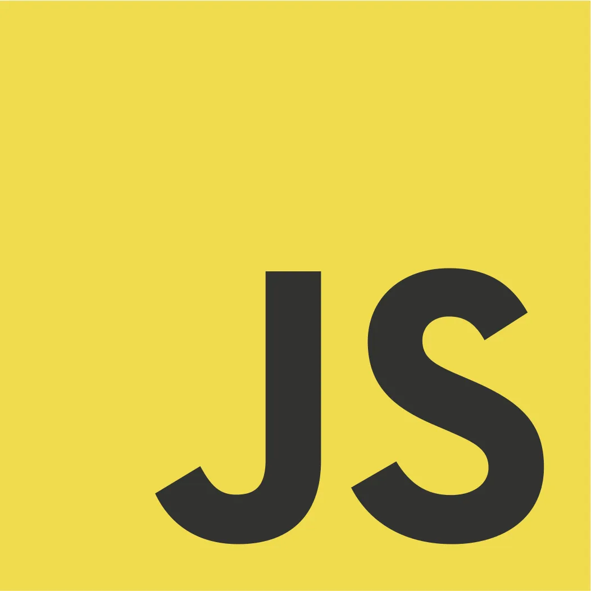

Colección de proyectos hechos por
yxsifdev
⏱️ Temporizador Pomodoro #2
Implementa un temporizador de enfoque basado en la técnica Pomodoro.
Controla el tiempo con botones de inicio, pausa y reinicio.
✅ To-Do List #1
ToDo List para gestionar tareas con opciones para agregar, marcar
como completadas y eliminar. Usa LocalStorage para mantenerlas
guardadas entre sesiones.